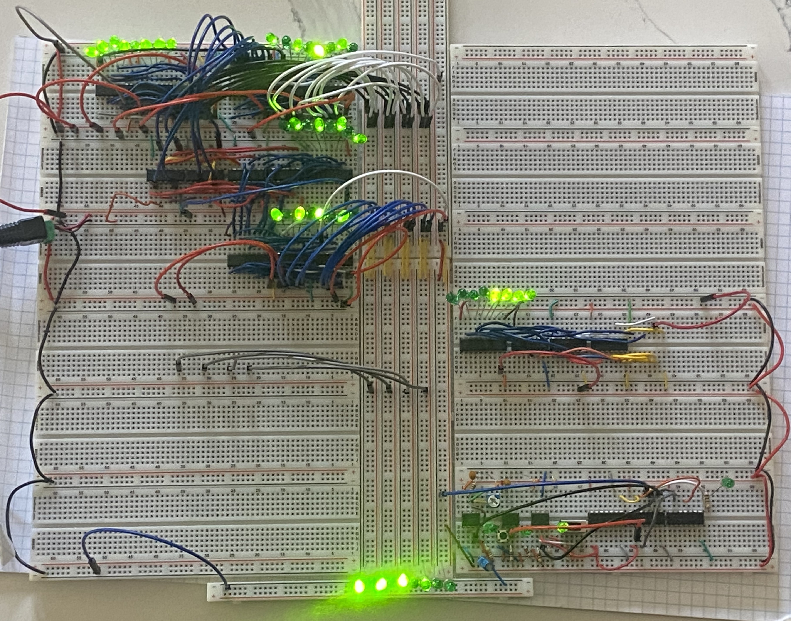
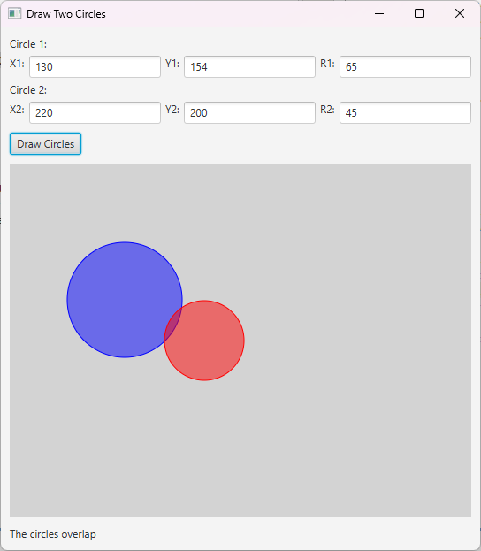

Simple x86 Operating System
Currently working on implementing a simple x86 based operating system, this project is to help me better understand the how operating systems work.
Learn more →
Tensorflow AI models
Created a series of simple tensorflow artificial intelligence models to understand how to work with AI model libraries.
Learn more →
SciKit-Learn Decision Tree Models
Created simple Decision Tree Model using Sci-kit learn to explore a different aspect of AI.
Learn more →

8 Bit Breadboard Computer
Created a 8 bit computer on bread boards to learn more about computer architecture
Learn more →

JavaFX Applications
Created multiple JavaFX applications to learn how to style and create useful applications using JavaFX
Learn more →